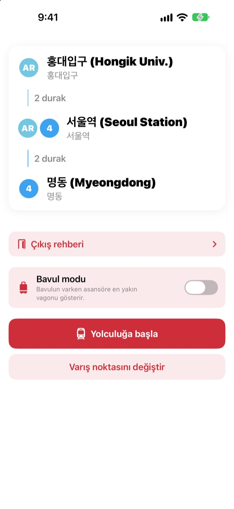
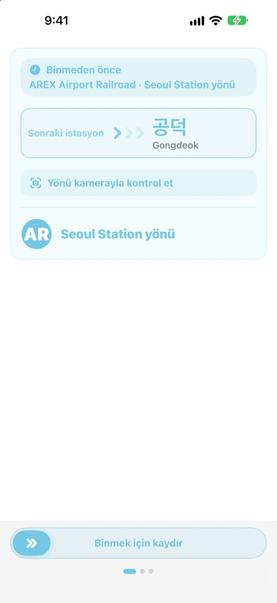
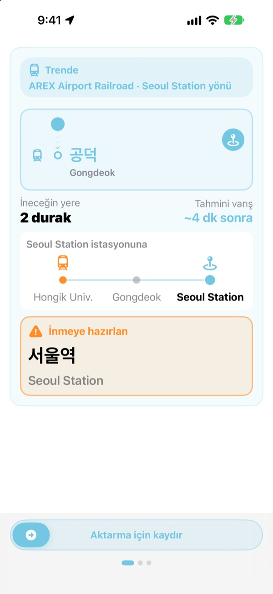
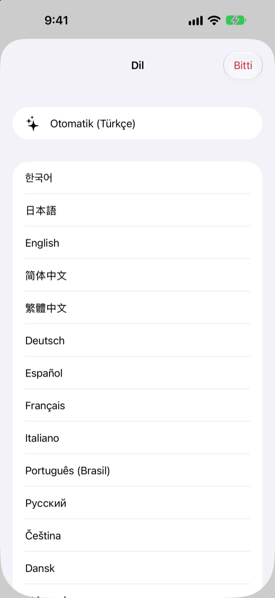

Doğru peron.
Doğru durak.
Başlangıç ve varış istasyonunu seç, KORA hangi trene bineceğini peron tabelasında yazdığı gibi söylesin. Yolculuk boyunca hangi istasyonda olduğunu izler, inme zamanı gelince haber verir.
Rota arama, trenin yönü ve gerçek zamanlı varışlar ücretsizdir.

Bir deneme yolculuğu yap
AREX hattında Hongik Univ. istasyonundasın. İneceğin yeri seç ve Yolculuğa başla’ya dokun; trenin yönünü ve inme uyarılarını uygulamadaki gibi gör.
Peronda hangi trene bineceğini bilemediğin oldu mu?
Harita uygulamaları hattı söyler ama peronda yalnızca hiç duymadığın istasyon adlarının yazdığı tabelalar vardır. Ters yöne binersen birkaç durak geri dönersin. Anonsu kaçırırsan durağını geçersin. KORA treni tabelanın söylediği gibi adlandırır ve durağından önce seni uyarır.
Tabeladaki kelimelerle
Binmen gereken tren, varış yeri peronda ve trenin üstünde nasıl yazıyorsa öyle gösterilir. Emin değil misin? Kamerayı perondaki tabelaya ya da trenin gideceği yer tabelasına tut, KORA doğru yönde olup olmadığını hemen söylesin.
Metin tanıma tamamen iPhone’unda yapılır.

Durağını bir daha kaçırma
KORA nerede olduğunu bilmek için gerçek zamanlı varışları, GPS’i, trenin kalkış ve duruşlarını ve tren içi anonsları birleştirir. Durağın yaklaşınca “İnmeye hazırlan”, ardından “Şimdi in!” uyarısı titreşimle gelir.
Yolculuğun ilerleyişi Kilitli Ekran’da ve Dynamic Island’da da görünür.

23 dil, Korece adlar yerinde
Uygulamanın tamamını 23 dilde kullan; iPhone’unun diliyle açılır. İstasyon adları, tabelalardaki Latin harfli yazımın yanında Korece aslıyla gösterilir, böylece peronda hemen eşleştirirsin.

Üç adımda başla
- 1
Başlangıcı belirle
GPS en yakın istasyonu bulsun ya da kendin seç.
- 2
Varış yerini seç
Aktarmalar, duraklar ve doğru tren hemen görünür.
- 3
Yolculuğa başla’ya dokun
Ekran ve titreşim ne zaman ineceğini söyler.
İzinler ne için
- Konum
- En yakın istasyonu bulmak
- Kamera
- Yönü kontrol etmek için peron ve varış tabelalarını okumak
- Mikrofon ve konuşma tanıma
- Tren içi anonslardan istasyon adını ve açılacak kapı tarafını yakalamak
- Hareket ve Fitness
- Kalkış ve duruşları algılayıp bulunduğun istasyonu daha doğru bilmek
Tüm izinler isteğe bağlıdır. İzin vermesen de istasyonları kendin seçer, rotayı ve inme uyarılarını yine alırsın. Konum, kamera ve anonslar cihazında işlenir; asla kaydedilmez, saklanmaz ya da gönderilmez.
Yol bulmak her zaman ücretsiz. Yolculuk rehberi KORA Pro’da.
Ücretsiz
- Rota arama ve aktarmalar
- Binmen gereken trenin varış tabelası
- Gerçek zamanlı varışlar
- Kamerayla yön kontrolü
- Ekranda bulunduğun istasyon ve inme uyarısı
- İlk üç yolculukta tüm Pro özellikleri
KORA Pro
- Her yolculukta: Kilitli Ekran rehberi, anons tanıma ve inerken titreşim
- Çıkış rehberi: Seul 1–8. hatlarda her çıkışın çevresindeki yerler
- 1–9. hatlar için son tren uyarısı
- Bavul modu: 1–8. hatlarda asansöre en yakın vagon
Bir kez öde, hep senin olsun. Abonelik değil.
Ücretsiz yolculuklar bitince de binmeye devam edebilirsin. Ekrandaki ilerleme kalır; yalnızca Kilitli Ekran, anons tanıma ve titreşim durur.
Sık sorulan sorular
Uygulama istasyonumu bulamıyor ya da yanlış istasyon gösteriyor.
Ayarlar > Gizlilik ve Güvenlik > Konum Servisleri > KORA’ya git, “Uygulamayı Kullanırken”i seç ve “Kesin Konum”u aç. Yer altında ya da büyük binalarda GPS şaşabilir: üstteki bulunduğun istasyon kartına dokunup istasyonu kendin seç. Konum izni olmadan da her şey çalışır.
Kamerayla yön kontrolü nasıl kullanılır?
Rota ekrandayken kamerayla yön kontrolünü aç ve perondaki tabelayı ya da trenin gideceği yer tabelasını kadraja doldur. En iyi sonucu Korece yazı verir. Tabela karanlık, uzak ya da çok yamuksa biraz yaklaş ve tam karşıdan tut. Sonuç bir yardımcıdır; emin olamazsan istasyondaki tabelalara da bak.
Gerçek zamanlı varışlar görünmüyor.
Veriler Seoul Open Data Plaza’dan gelir, internet gerektirir ve çoğunlukla Seul metropol bölgesindeki hatlar için vardır. Bağlantı ya da veri yoksa KORA otomatik olarak sefer saatleri, GPS ve ivmeölçere dayalı tahmine geçer ve sana rehberlik etmeye devam eder. Rota arama internetsiz çalışır.
İnme uyarısı biraz erken ya da geç geldi.
Yer altında GPS zayıftır, bu yüzden bulunduğun istasyon geriden gelebilir. Mikrofona izin verirsen KORA konumu tren içi anonslarla düzeltir. Uyarılar yardımcıdır; anonsları da dinle, tabelaları da takip et.
Dili nasıl değiştiririm?
KORA iPhone’unun diliyle açılır. Ana ekrandaki istasyon kartına (bulunduğun istasyon ya da varış) basılı tut, 23 dil arasından seçim yapabileceğin dil seçici açılır.
Canlı Etkinlik Kilitli Ekran’da görünmüyor.
Ayarlar > Uygulamalar > KORA’da (eski iOS’ta Ayarlar > KORA) Canlı Etkinlikler’in açık olduğunu kontrol et. Yolculuk rehberini başlatınca görünür, uygulamayı tamamen kapatırsan sona erer. Dynamic Island yalnızca onu destekleyen iPhone modellerinde bulunur.
Hangi şehirler var?
Seul metropol bölgesinde (Seul, Gyeonggi ve Incheon; GTX-A, AREX, Shinbundang hattı ve hafif raylılar dahil), Busan, Daegu, Gwangju ve Daejeon’da yaklaşık 930 istasyon. Şehri istasyon seçicinin üstündeki bölge düğmeleriyle değiştirirsin.
Yolculuktan önce deneyebilir miyim?
Evet. Başlangıç ve varışı kendin seç; rotaları, aktarmaları ve trenin yönünü dünyanın her yerinden görebilirsin.
KORA Pro abonelik mi?
Hayır. Bir kez satın alınır ve hep senin kalır, Aile Paylaşımı ile de çalışır. Uygulamayı yeniden yüklersen Pro ekranında Satın Alımı Geri Yükle’ye dokun.
Verilerime ne oluyor?
Hesap yok, reklam yok. Konum, kamera ve anons tanıma cihazında işlenir; asla saklanmaz ya da gönderilmez. Uygulamayı geliştirmek için yalnızca anonim kullanım istatistikleri toplarız.
Uygulama erişilebilir mi?
KORA VoiceOver’ı ve büyük metin boyutlarını destekler. Erişilebilirliği iyileştirmek için önerilerine her zaman açığız.
Eksik istasyon, tuhaf bir ad ya da başka bir soru mu var? mizzking75@gmail.com adresine yaz. Uygulama sürümünü, iPhone modelini ve kullandığın istasyonları yazarsan daha hızlı bakarız.